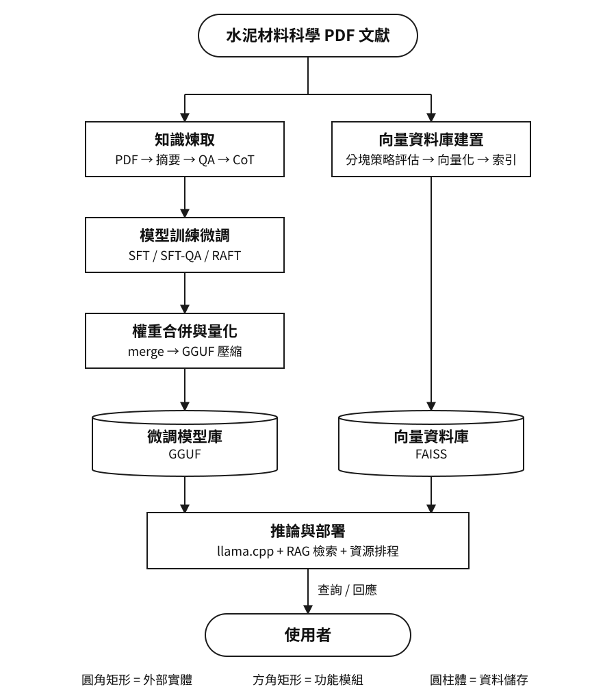
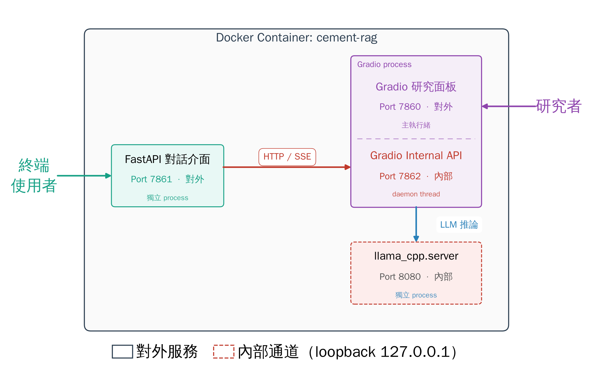

碩士論文 · 主要研究
LLM · RAG · PEFT · 邊緣部署
邊緣環境下水泥材料之檢索增強生成與微調策略研究
獨立研究 · 元智大學資訊工程碩士論文（86 頁）
為製造業技術傳承打造可部署於邊緣端的水泥材料科學專家 LLM 系統， 解決人力斷層與文獻回顧耗時問題。完整走完資料工程 → 微調 → 量化 → 部署 → 統計驗證的研究流程。
- 以 PyMuPDF 提取中英文文獻，Token 閾值分流 + Map-Reduce 摘要管線，自建 2,392 筆「引用／推理／結論」三段式 CoT QA 對
- 向量庫以 3 基線 × 6 閾值共 9 組受控實驗，配對 Wilcoxon 檢定證實語料品質（+24%）遠勝分塊策略，並以 FAISS 提供來源引用
- Qwen 0.5B–9B 共 15 規模，以 DoRA 領域特化，比較 SFT-Summary／SFT-QA／RAFT 三策略，GGUF 量化部署於 GTX 1060 6GB
RAFTDoRAFAISS
GGUFQwenCoT
WilcoxonIDEF0
RAFT BERTScore79.21（最佳）
拒答率大幅下降21.63% → 1.01%
引用對齊率85.81%
領先商用 API+9.53 ~ +12.46 pts
統計顯著性p < 0.001
測試題數372 題
對照組：GPT-4o、GPT-4o-mini、Gemini-3-Flash、Gemini-3.1-Pro。 本地最佳配置於邊緣端全面超越商用 API。
系統整體流程示意圖
資料工程 → 微調 → 量化 → 邊緣部署，並以 FAISS 向量庫提供來源引用

邊緣端部署示意圖（Docker 容器）
FastAPI 對話介面 + Gradio 研究面板 + llama.cpp 推論服務，於單一容器內協作

＊ 上方兩張為系統概念示意圖；嚴謹的功能建模請見下方 IDEF0 分解圖。
IDEF0 功能模型分解 點擊縮圖可放大檢視（A0 頂層 → A1–A5 分解）
＊ IDEF0 分解圖與上述示意圖皆取自本人碩士論文《邊緣環境下水泥材料之檢索增強生成與微調策略研究》。